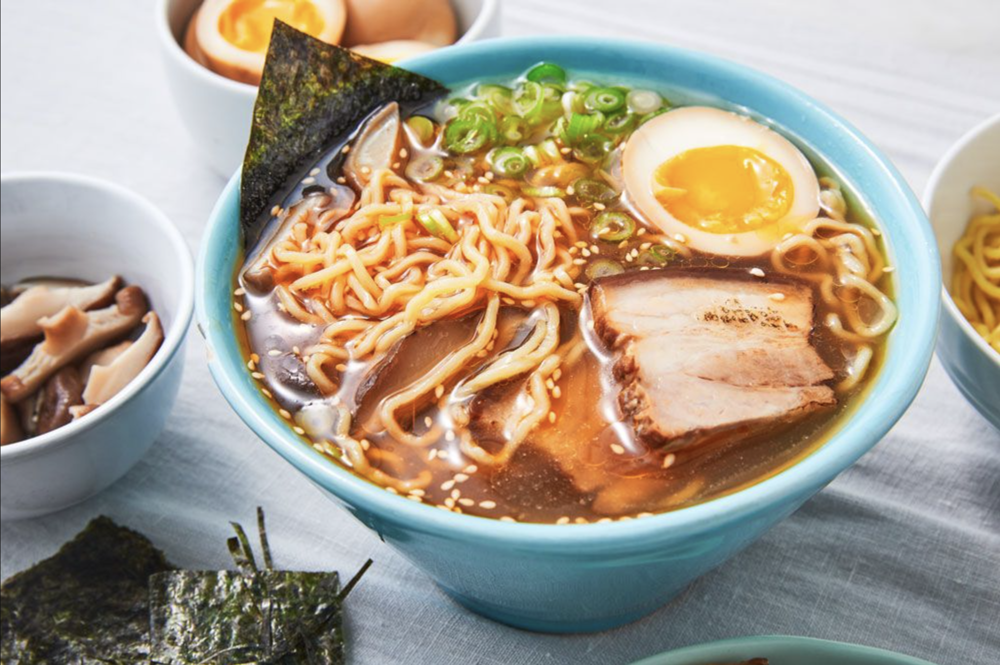

Ramen

Description
Ramen is a beloved Japanese noodle soup that has transcended its national origins to gain international fame.
The essence of ramen lies in its complex and flavorful broth, paired with chewy, springy wheat noodles. The broth,
which is the soul of the dish, can be based on chicken, pork, beef, or seafood, and is often simmered for hours to
develop a deep, rich flavor. There are several key types of ramen broth: shoyu (soy sauce), miso (fermented soybean
paste), tonkotsu (pork bone), and shio (salt). Each type offers a distinct flavor and is regionally influenced, with
miso ramen popular in Hokkaido and tonkotsu ramen hailing from Kyushu.
Accompanying these noodles and broth are various toppings that add contrasting textures and flavors. Common toppings
include slices of pork (chashu), bamboo shoots (menma), seaweed (nori), green onions, and boiled eggs (often marinated
in soy sauce and mirin). Some versions also include corn, butter, bean sprouts, and bok choy, showcasing regional
variations and personal preferences. Ramen's preparation and ingredients can vary significantly from one region to
another, reflecting local tastes, ingredients availability, and culinary traditions. This diversity in styles and
flavors makes ramen a versatile and endlessly customizable dish, which continues to evolve both in Japan and around
the world, adapting to new tastes and influences.
Ingredients
For the Broth:
- Chicken or Pork Bones: 1-2 pounds (for making the stock)
- Water: 6-8 cups (for the stock)
- Garlic: 3-4 cloves, smashed
- Ginger: One 2-inch piece, sliced
- Onions: 1 large, halved
- Soy Sauce: To taste (for flavoring)
- Mirin: 2 tablespoons (for a slight sweetness)
- Miso Paste or Salt (depending on the type of broth you're making)
For the Tare (Seasoning Sauce):
- Soy Sauce: 1/4 cup
- Sake: 1/4 cup
- Sugar: 1 tablespoon
- Salt: A pinch (adjust based on taste)
For the Noodles:
- Ramen Noodles: 4 servings (fresh or dried, depending on availability)
Toppings (Choose based on preference):
- Chashu (braised pork belly or loin)
- Boiled Eggs: Soft or hard boiled, marinated in soy sauce and mirin if desired
- Green Onions: Finely chopped
- Bamboo Shoots (Menma)
- Nori (Seaweed): Cut into strips
- Corn: Cooked
- Butter: A small pat per bowl (common in miso ramen)
- Bean Sprouts: Blanched
- Spinach: Blanched or sautéed
- Bok Choy: Lightly sautéed or blanched
- Mushrooms: Sliced and sautéed or raw
Steps
Prepare the Broth:
- Make the Stock: In a large pot, add the chicken or pork bones and cover with cold water. Bring to a boil
and then reduce to a simmer. Skim off any scum that rises to the surface. This process can take several
hours (ideally 6-8 hours for richness).
- Add Aromatics: After the initial hour, add the garlic, ginger, and onions to the stock. Continue to simmer,
occasionally skimming the scum.
- Season the Broth: About an hour before finishing, add soy sauce and mirin to taste. If making miso ramen,
you can stir in miso paste during the last 30 minutes of simmering. Adjust the flavor according to your taste.
Prepare the Tare (Seasoning Sauce):
- Combine Ingredients: In a small saucepan, mix soy sauce, sake, sugar, and a pinch of salt. Bring to a simmer
over low heat just until the sugar dissolves. Remove from heat and set aside. This will be used to season the
individual bowls.
Prepare Toppings:
- Prepare Chashu: If making pork chashu, roll a piece of pork belly with string and simmer in a mix of soy sauce,
mirin, sugar, and water until tender. Slice before serving.
- Prepare Eggs: Boil eggs to your desired doneness, peel and marinate in a mix of soy sauce and mirin if desired.
- Prepare Vegetables: Chop green onions, blanch or sauté spinach, bean sprouts, and bok choy, and prepare any other
toppings like bamboo shoots or nori.
Cook the Noodles:
- Boil Noodles: In a large pot of boiling water, cook the ramen noodles according to package instructions until
just tender. Be careful not to overcook. Drain well.
Assemble the Ramen:
- Season the Bowl: Start by adding a few tablespoons of your prepared tare to each bowl.
- Add Hot Broth: Ladle the hot broth over the tare in each bowl.
- Add Noodles: Place a serving of noodles in each bowl.
- Add Toppings: Arrange the sliced chashu, boiled eggs, green onions, and other prepared toppings over the noodles.
- Garnish: Add a pat of butter if using, and sprinkle with additional chopped green onions or sesame seeds.
Serve:
- Serve Immediately: Enjoy your bowl of homemade ramen hot, customizing each bowl with additional soy sauce, sesame
oil, or chili oil as desired.